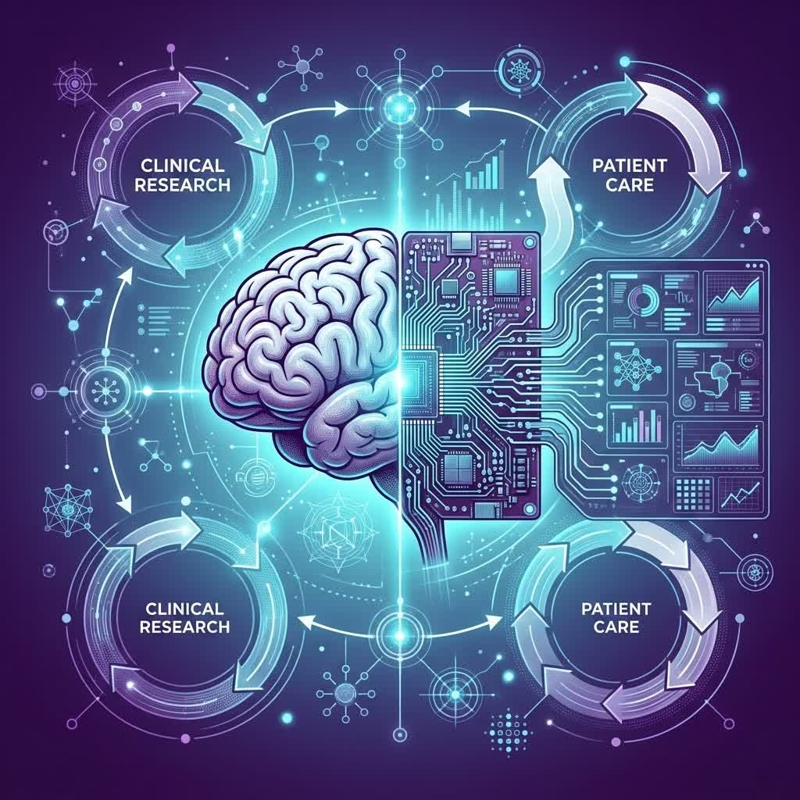
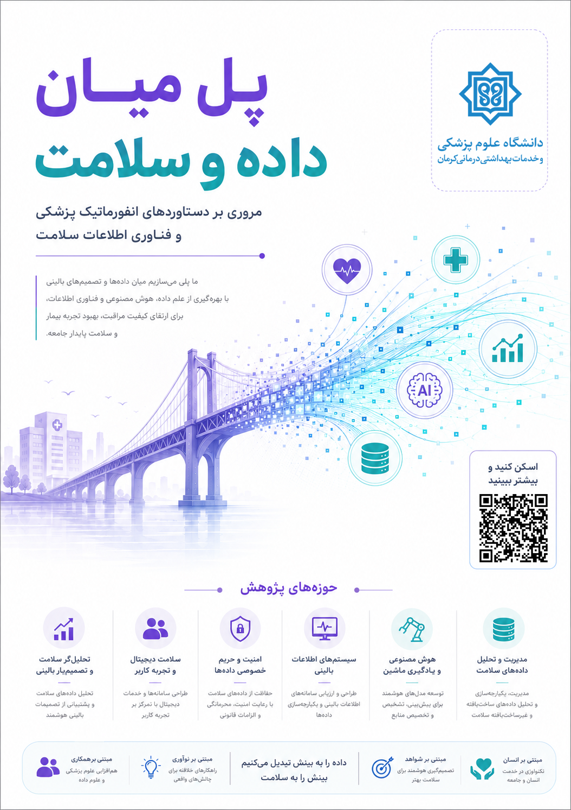

انفورماتیک پزشکی (Medical Informatics) به کارگیری علوم داده، هوش مصنوعی، یادگیری ماشین و روشهای محاسباتی در حوزه سلامت و پزشکی است. این رشته به دنبال بهبود کیفیت مراقبت، کاهش خطاهای پزشکی و افزایش کارایی نظام سلامت از طریق ابزارهای هوشمند و مبتنی بر داده میباشد. انفورماتیک پزشکی پل ارتباطی بین پزشکی بالینی، مهندسی کامپیوتر و مدیریت اطلاعات است.
فارغالتحصیلان میتوانند در مراکز تحقیقاتی سلامت، شرکتهای فعال در حوزه هوش مصنوعی پزشکی، بیمارستانهای هوشمند، معاونتهای پژوهشی وزارت بهداشت، استارتاپهای سلامت دیجیتال و همچنین سازمانهای بینالمللی مانند WHO و بانک جهانی مشغول شوند. نقشهایی مانند تحلیلگر داده سلامت، دانشمند داده پزشکی، طراح سیستمهای تشخیص هوشمند و مشاور انفورماتیک بالینی از جمله فرصتهای شغلی هستند.
کارشناسی ارشد و دکتری تخصصی انفورماتیک پزشکی در دانشگاههای علوم پزشکی تهران، کرمان، شیراز، شهید بهشتی و ایران ارائه میشود. همچنین گرایشهای تخصصی مانند انفورماتیک بالینی، انفورماتیک تصویربرداری و انفورماتیک ژنومیک وجود دارد. امکان ادامه تحصیل در خارج از کشور در دانشگاههای مطرح جهان نیز وجود دارد.
با ورود هوش مصنوعی به پزشکی، نیاز به متخصصان انفورماتیک پزشکی به شدت افزایش یافته است. موقعیتهایی مانند متخصص داده سلامت، مدیر سیستمهای پشتیبان تصمیم، پژوهشگر هوش مصنوعی در تشخیص بیماریها و مشاور تحول دیجیتال در بیمارستانها از جمله آیندههای شغلی این رشته است.
خیر، دانش پزشکی در طول تحصیل به مرور آموزش داده میشود، اما آشنایی با مبانی زیستشناسی و آناتومی مفید است.
با توجه به دیجیتالسازی نظام سلامت، پروژههایی مانند نسخه الکترونیک و پرونده سلامت الکترونیک، تقاضا برای این متخصصان روزافزون است.
بسیار زیاد. بسیاری از استارتاپهای حوزه سلامت دیجیتال به دنبال فارغالتحصیلان انفورماتیک پزشکی هستند.

معرفی رشته انفورماتیک پزشکی
برای دیدن تصویر در اندازه بزرگ، روی آن کلیک کنید.